00 · Open source · MIT · built on PixiJS v8
Video, written as data.
A video is a tree of plain objects. Tell an AI one sentence and it writes one: it plays in the browser and exports MP4.
Or give your agent the skill: npx skills add yjmtmtk/pixi-effects
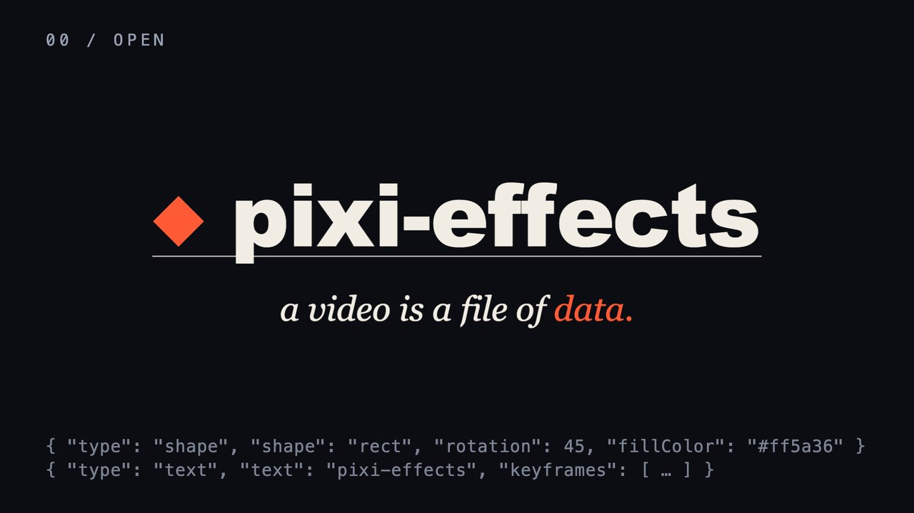
The reel
Everything it does, in 81 seconds
Twelve chapters, one HTML page of data, music written as text.
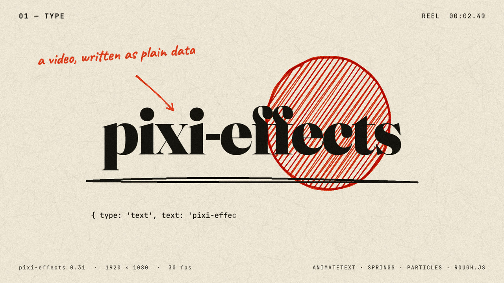
A film · paper and ink
A film an AI wrote, in one page
Hand-drawn data, a three.js knot, a paper diorama lit by one spot, and sound written as text.
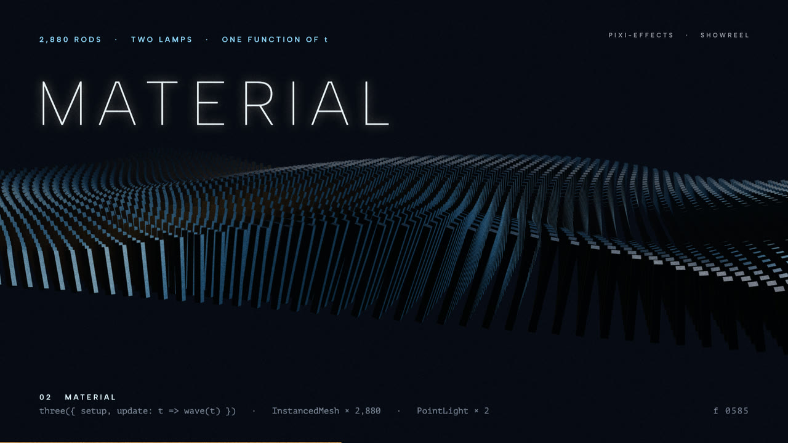
A film · light as a material
The same idea, at night
A spot light with cast shadows, 2,880 rods, a camera flight with focus pulls.
The complete minimal composition, as JavaScript. The play button on the right runs this very text in your browser:
import { Movie } from 'pixi-effects';
const movie = new Movie();
await movie.init({
canvas, width: 1280, height: 720, duration: 6, frameRate: 30,
background: '#0a0a0f',
composition: { sequences: [
{ type: 'text', text: 'Hello', at: 0.5,
style: { fontSize: 120, fontWeight: 'bold', fill: '#fff' },
initial: { x: 'GW/2', y: 'GH/2', anchorX: 0.5, anchorY: 0.5 },
keyframes: [{ at: 0, from: { alpha: 0, y: 'GH/2 + 40' },
to: { alpha: 1, y: 'GH/2' },
duration: 0.6, ease: 'power2.out' }] },
{ type: 'audio', sfx: 'chime', at: 1.1 },
] },
});
movie.play();
// or: const mp4 = await movie.render({ format: 'mp4' })![The real frame at 1.2 seconds of the composition on the left: the word Hello in white bold type, centred on near-black]()
This exact data, running live in your browser
Press play: nothing is pre-rendered; this text runs as written.
One sentence
Tell any AI this. It reads the repository and checks what it makes.
Use https://github.com/yjmtmtk/pixi-effects to make a video: a 10-second title for a bakery, warm cream colours, a soft chime at the end
43 pieces, each one file of data
Every poster opens the piece, playing live.
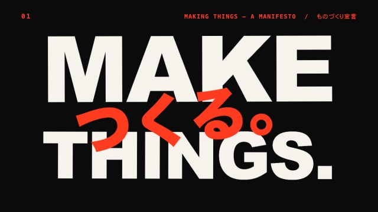
A real piece, live
Kinetic Manifesto
Five bilingual statements slammed onto a 100 BPM grid, written by an AI model.
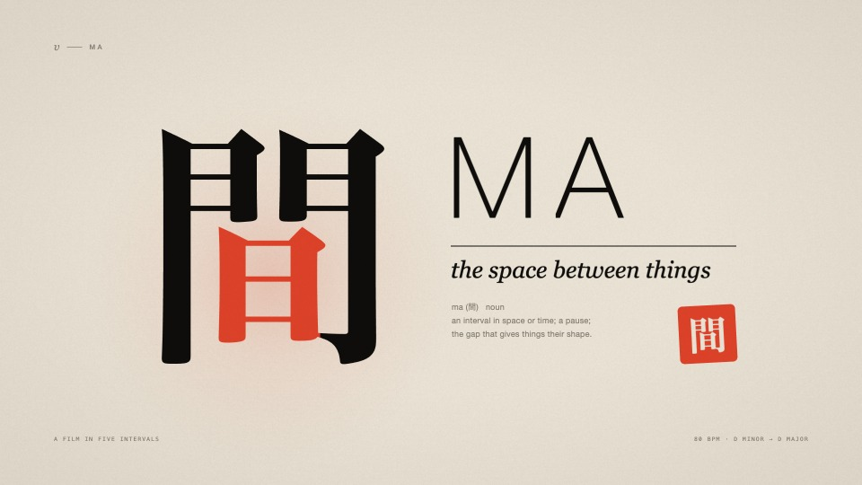
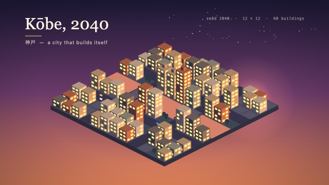
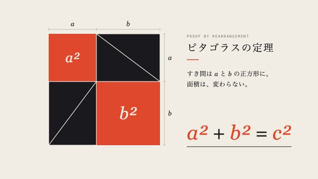
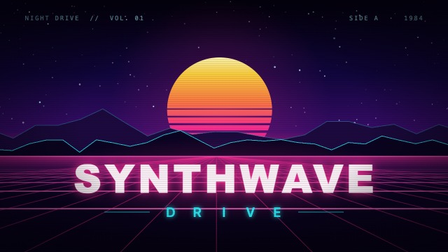
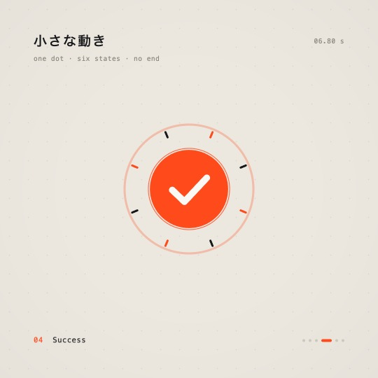
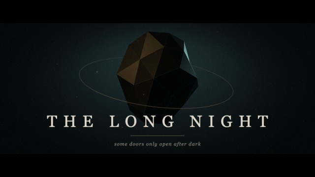
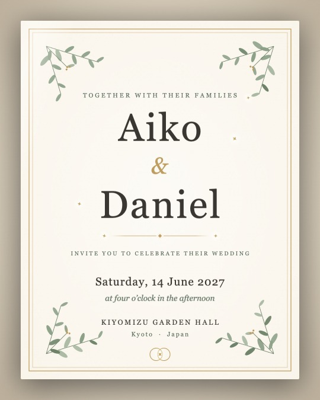
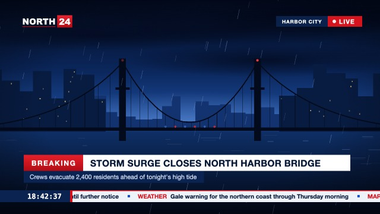
43 pieceswritten by fable 9 · opus 32 · sonnet 2
Open the live galleryChange it while it plays
A name, a colour, the pointer: change one and the film is built again at the same frame.
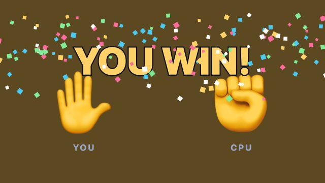
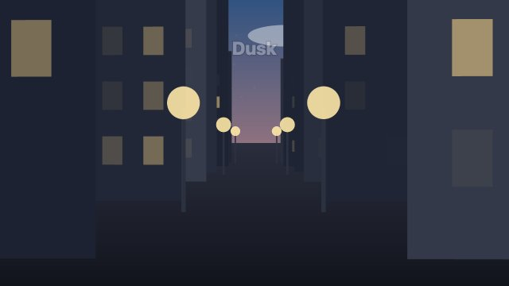
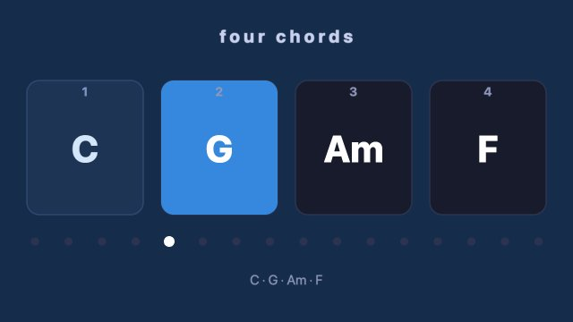
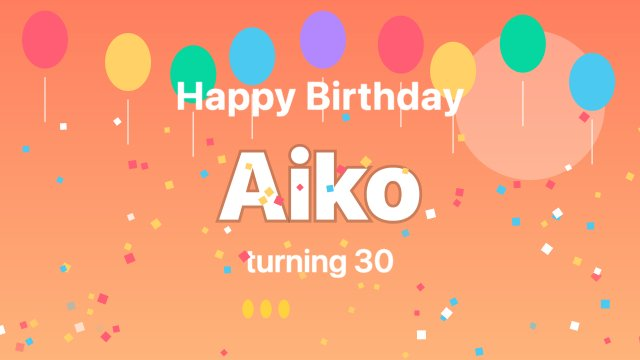
9 live samplesseekable · loopable · renderable
Open the interactive movies